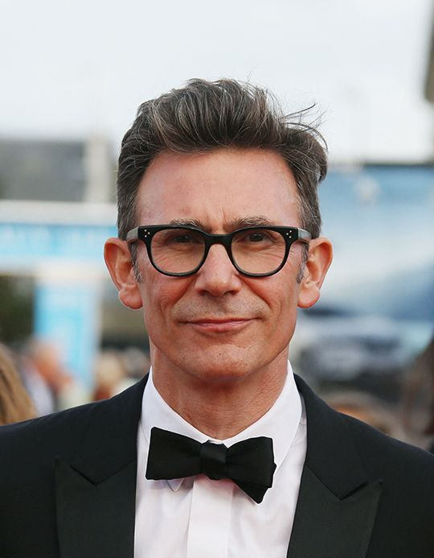

BIOGRAPHIE
Ludovic Bource est né le 19 août 1970. Il est compositeur
depuis 1999, et compose au piano et à l'accordéon. Son surnom
qui est"Dr Crunkenstein Planet Get Down PDG".
Ludovic Bource a reçu le César de la meilleure musique originale en
2012grâce à la musique qu'il a crée pour le film
The Artist.
FILM THE ARTIST
Logo du film The Artist
RÉALISATEUR
Michel Hazanavicius lors de la 42e cérémonie des César en 2017.
RÉSUMÉ DU FILM
L'histoire se passe à Hollywood en 1927. L’acteur
George Valentin est une vedette du cinéma
muet, à qui tout sourit.
Travaillant sur son
dernier film, George tombe amoureux de la jeune Peppy Miller
. Cet amour est réciproque mais George n'a pas envie de
tromper sa femme avec la jolie jeune actrice. Il va laisser tomber son
amour pour la jeune Peppy. L’arrivée des films parlants
va le faire sombrer dans l’oubli. Et pendant que
George sombre dans l’oubli. Et durant ce temps la jeune Peppy elle
monte dans le succès. Après un moment qu’ilsne s’étaient pas vu, ils
se recroisent et la jeune dame l’aide alors àfaire remonter sa
carrière et son coeur.
The Artist a reçu énormément de récompenses internationales, des César, des Oscars, des Golden Globe, ...
Extrait du film "The Artist".
COMPOSITION MUSICALE
Il y a principalement de la musique symphonique. Une musique extrêmement puissante, orchestrée, jouée par 80 musiciens. Et je trouve cette musique romantique.